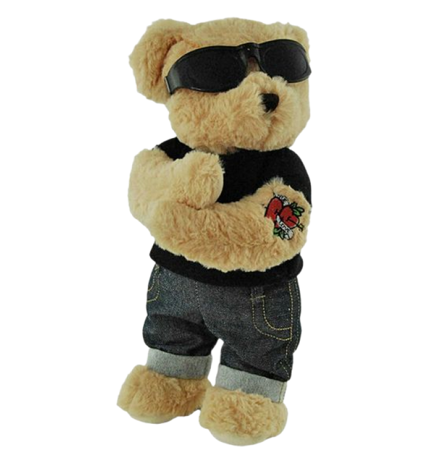
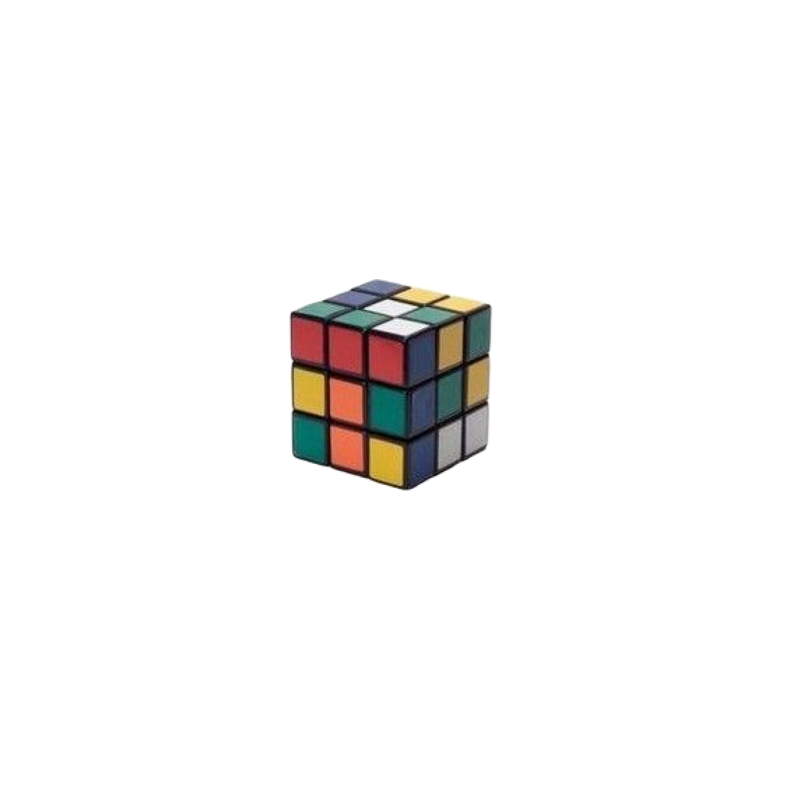
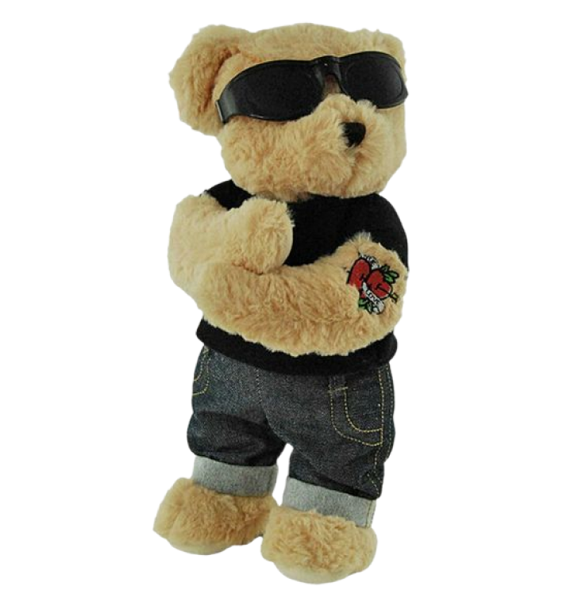
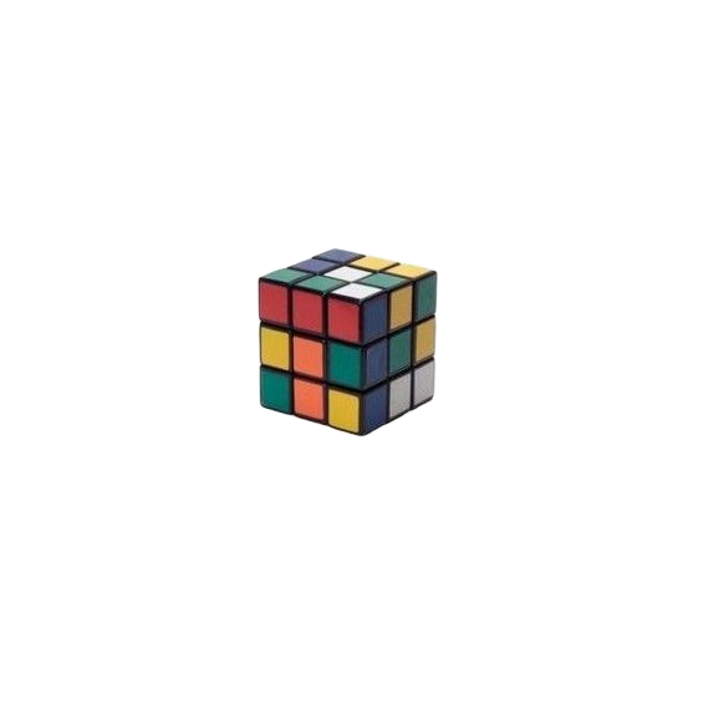
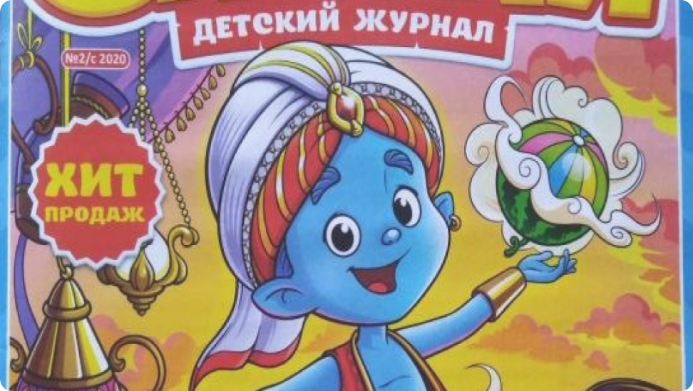
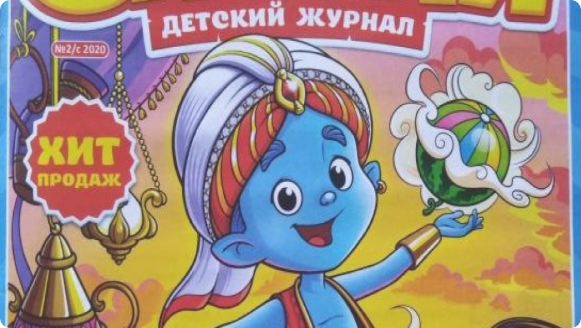

эти потрясающие журналы выписывали пачками, ждали с нетерпением и хранили годами.


  
  
«Мурзилка» — популярный детский литературно-художественный журнал
Журнал «Мурзилка» издаётся с 16 мая 1924 года и адресован детям младшего школьного возраста. За почти 100 лет существования всеми любимого детского журнала его выпуск не прерывался ни разу.
«Мурзилка» тесно связан с жизнью и интересами юных читателей. В каждом выпуске читателя ждут не только стихи, рассказы и сказки, но и познавательные и развлекательные материалы. Именно поэтому многие родители, учителя, воспитатели и библиотекари часто используют журнал в своей работе с детьми.


Журнал «Мурзилка»
«Мурзилка» — популярный детский литературно-художественный журнал

Журнал «Мурзилка»


Знание — сила

Иностранная литература

Крокодил

Веселые картинки
Наука и жизнь
Вокруг света

Юный техник

Смена
Техника-Молодежи
Трамвай
Журнал «Веселые картинки» — одно из самых любимых изданий для детей, на котором выросло не одно поколение. Год основания журнала — 1956. По большому счету, это был первый советский журнал с комиксами, рассчитанными на детей 4–8 лет.
Журнал «Юный техник» — научно — популярный журнал для юношества, отметивший в 2006 году свое пятидесятилетие, знаком читателям многих поколений. С 1956 года журнал был издан суммарным тиражом не менее 500 миллионов экземпляров.
Знание — сила
Иностранная
литература
Крокодил
Веселые
картинки
Наука и жизнь
Вокруг света
Юный техник
Смена
Техника-
Молодежи
Трамвай
Журнал «Веселые картинки» — одно из самых любимых изданий для детей, на котором выросло не одно поколение. Год основания журнала — 1956. По большому счету, это был первый советский журнал с комиксами, рассчитанными на детей 4–8 лет.
Журнал «Юный техник» — научно — популярный журнал для юношества, отметивший в 2006 году свое пятидесятилетие, знаком читателям многих поколений. С 1956 года журнал был издан суммарным тиражом не менее 500 миллионов экземпляров.
Интересный и разнообразный материал подобран по возрасту, рассчитан на современных детей.

В чем же плюсы детских газет и журналов? Дети соглашаются читать сказки, рассказы и комиксы в журналах, ведь интересно узнать, что же на самом деле изображено на красочных иллюстрациях. Интересный и разнообразный материал подобран по возрасту, рассчитан на современных детей.
В одном журнале ребёнок сразу сможет прочитать и детективную историю, и узнать ответы на самые трудные вопросы, и новые факты о животных, и интересные случаи из физики, и может прочитать комикс о супергероях, — все это простым и понятным языком.


 
Интересный и разнообразный материал подобран по возрасту, рассчитан на современных детей.
В чем же плюсы детских газет и журналов? Дети соглашаются читать сказки, рассказы и комиксы в журналах, ведь интересно узнать, что же на самом деле изображено на красочных иллюстрациях. Интересный и разнообразный материал подобран по возрасту, рассчитан на современных детей.
В одном журнале ребёнок сразу сможет прочитать и детективную историю, и узнать ответы на самые трудные вопросы, и новые факты о животных, и интересные случаи из физики, и может прочитать комикс о супергероях, — все это простым и понятным языком.


Интересный и разнообразный материал подобран по возрасту, рассчитан на современных детей.
В чем же плюсы детских газет и журналов? Дети соглашаются читать сказки, рассказы и комиксы в журналах, ведь интересно узнать, что же на самом деле изображено на красочных иллюстрациях. Интересный и разнообразный материал подобран по возрасту, рассчитан на современных детей.
В одном журнале ребёнок сразу сможет прочитать и детективную историю, и узнать ответы на самые трудные вопросы, и новые факты о животных, и интересные случаи из физики, и может прочитать комикс о супергероях, — все это простым и понятным языком.


Пионер
Чтобы транслировать детям новые коммунистические идеалы, нужны были оперативные, современные и действенные средства. Например, периодика. В 1920-х годах появилось множество «идеологически правильных» журналов для детей: «Пионер», «Мурзилка», «Барабан», «Воробей» (позже — «Новый Робинзон»), «ЁЖ» и «Чиж». Ребенок с барабаном или горном — ещё один визуальный символ детской культуры того времени. Он будет ассоциироваться со школой и особенно — с пионерской организацией
Творческие поиски в искусстве и педагогике сходят на нет, воспитание детей унифицируется. В приоритете — патриотическое и военно-спортивное воспитание, общественно полезный труд. В этой обстановке журналы испытывают сильное идеологическое давление. Детская периодика перенастраивается на очень серьёзный лад. К середине 1930-х годов она оказывается наводнена материалами о борьбе с врагами. Предполагается, что бдительными должны быть все: и подростки, и дети помладше.
Обложка журнала «Мурзилка», 1930 год
Чиж

Журнал Еж

Пионер

Обложка журнала
«Мурзилка», 1930 год

Чиж
Журнал Еж


В эпоху оттепели и последующий период актуализировались семейные ценности. Идеологическое давление на педагогику постепенно слабело.

Мурзилка на Спутнике
Во второй половине ХХ века коммунальные квартиры расселялись, семьи получали отдельное жильё, и у детей наконец появилось личное пространство — заповедный «детский уголок» для учёбы, творчества, игр. В обществе распространилась установка «Всё для детей». А детство теперь воспринималось как особый период в жизни человека. Ребёнок уже не «маленький взрослый».
В детской жизни социальные институты — прежде всего школа — заняли главное место, а в литературе получил развитие жанр школьной повести. Однако было множество возможностей и внеклассной работы: дворцы и дома пионеров, станции юных техников и юных натуралистов, музыкальные, художественные и спортивные школы.